ZEPHYRON / Nhận diện mới
Monochrome · 2026

Đường nét rõ. Dấu ấn riêng.
Giữ nguyên ký hiệu và chữ ZEPHYRON của Zuzong. Chỉ chuyển màu sang đen trên nền sáng hoặc trắng trên nền tối. Toàn bộ đường vector, tỷ lệ và bố cục trùng bản gốc; có thể chỉnh trong Illustrator hoặc Figma.
Đen
#111111
#111111
Trắng
#FFFFFF
#FFFFFF
Xám nền
#F4F4F4
#F4F4F4
Xám chữ
#626262
#626262
Biểu tượng & tệp nguồn

Giữ tỷ lệ gốc, chừa khoảng trống ít nhất bằng nửa chiều cao biểu tượng. Dùng bản đen trên nền sáng và bản trắng trên nền tối. Không thêm viền, đổ bóng hoặc kéo méo logo.